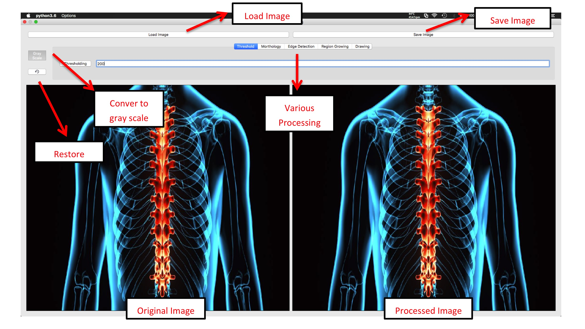

簡易醫學影像GUI (Dicom Viewer)
能顯示 2D/3D Dicom影像的應用
本project旨在利用python+Qt製作簡易的醫學影像GUI，提供一個平台，能在上面使用python開發測試各式影像處理功能，尤其是針對3D之Dicom Stack！
先看兩段Demo吧
2D Image Processing
3D Image Processing
執行畫面
執行程式會打開Main Window，左上角的選單有2D processing和3D processing兩個子選項，其中後者embed有3D volume reconstruction功能
Main Window

2D processing
內含功能
- Load Image (含*.dcm)
- Save Image
- Convert to gray scale
- Restore
- Thresholding
- Region Growing
- Morthology (Dilation, Erosion, Opening, Closing)
- Edge Detection (Laplacian, Sobel, Perwitt, Frei & Chen)
- Drawing

3D processing
內含功能
- Load DICOM stack
- Save slice (axial, sagittal, coronal)
- Colormap transform
- Slider scrolling
- Mouse hovering/clicking
- Show DICOM info
- Show slice index coordinate
- 3D volume reconstruction

3D volume reconstruction

Future Extension
- 加入數據分析功能 >導入一些醫學知識，讓軟體有一些初步的分析功能（如有沒有骨折、腫瘤等等）
- 3D reconstruction改善 >更新volume重建算法，提升計算速度與還原度
- 3D image processing >加入對3D voxel影像進行更複雜的影像處理功能
- Make it distributable >包裝成release版本，成為可轉散發軟體。希望能支援跨平台運作（window、macOS）
How to use it?
Project root will be /src, just clone it and run mainwindow.py.
Strictly follow the package version in requirements.txt is not necessary.